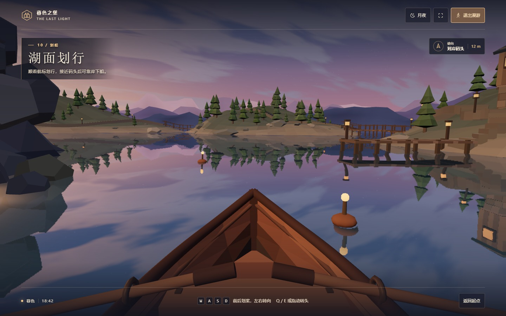
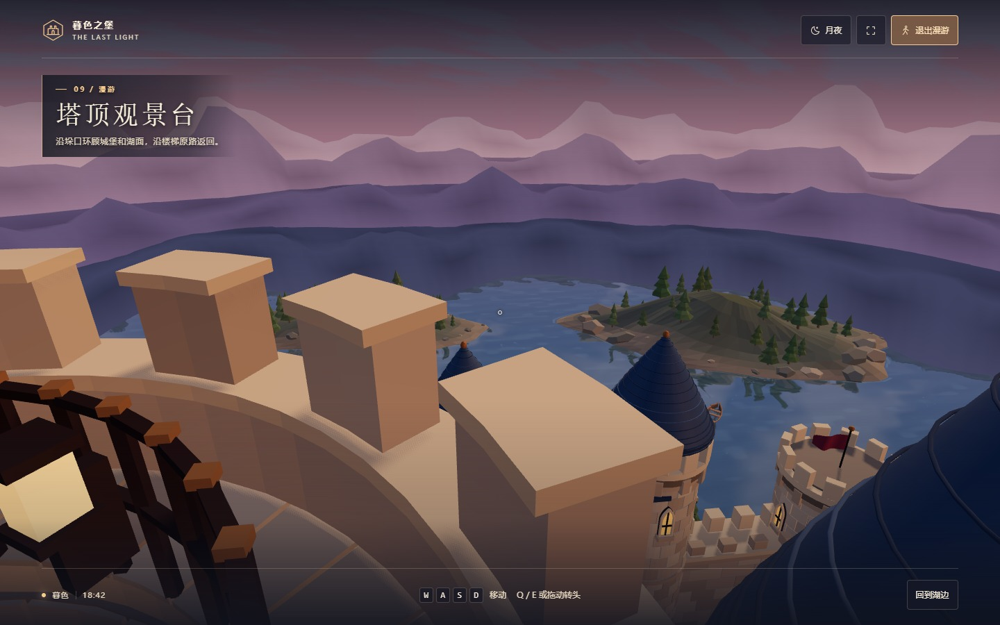

我们做了什么
构建城堡、湖岸、松林、渔屋和旧塔遗迹，加入第一人称步行、划船靠岸、大厅探索、60 级螺旋石阶与塔顶观景。修正门框重叠闪烁、起点与登船位置，让路线符合到访逻辑。
暮色之堡 × 从零造物 / 空间原型与内容探索
我们用 Three.js + HTML 做出了可以渡湖、入堡、登塔的 3D 原型，再研究如何把科普、历史、音乐与农业融入同一个世界。现有成果是连续漫游与可复用场景，下一步验证器物操作能否引起好奇、帮助理解。
RESEARCH SUMMARY
这项研究从一个城堡画面，推进到一条完整的到访路线，再提出兴趣驱动学习的世界方向。我们已经交付可试玩的空间原型，并把愿景、内容依据、候选玩法和验证方法整理在同一页。
构建城堡、湖岸、松林、渔屋和旧塔遗迹，加入第一人称步行、划船靠岸、大厅探索、60 级螺旋石阶与塔顶观景。修正门框重叠闪烁、起点与登船位置，让路线符合到访逻辑。
得到一套可以继续修改的程序化场景与连续漫游基础。它把画面、路线、操作和反馈接在一起，可用于探索关卡、互动展示与知识场景原型，也让空间和引导问题可以通过实机操作核对。
把《从零造物》的器物选题、原理与资料出处接入世界。玩家因好奇停下来、动手改条件，再沿兴趣深入科学、历史、音乐和农业。知识模型与学习成效仍需制作和体验验证。
现有路线 渔屋码头 → 登船渡湖 → 城堡栈台 → 石阶与吊桥 → 城门与大厅 → 螺旋楼梯 → 塔顶俯瞰。岸边步道连接渔屋与旧塔遗迹，也可返程继续探索。
OUR RESEARCH AT A GLANCE

01 / THE INTENT
我们的愿景是把科普融入一个真实的世界，让人找到兴趣，历史、音乐、农业等都能在里面发生。由此整理出一个工作方向，玩家能走进环境、接触器物、改变条件，并看见自己的操作带来什么变化。
“这是一个真实的世界，但是应该把科普融入进去，让人找到兴趣，历史、音乐、农业等都要融入。”
水车灌溉田地，谷物运往磨坊，粮船进城，集市有人称重，也有人演奏。同一件事会自然牵出科学、技术与人的生活。
喜欢声音的人可以停在乐器旁，喜欢机械的人可以钻进磨坊。玩家的停留、尝试和追问，决定下一步打开什么内容。
划桨带来推进，装货改变吃水，推石磨会感到阻力。声音、动作和状态变化，让玩家愿意再试一次。
先看见现象，再尝试操作。想追问时，可以看结构剖面、读历史来历，或继续进入《从零造物》的原理与实验记录。
关于“真实”的工作解释 本页把真实理解为生活关系合理、操作结果有依据、史实可以追查。场景可采用风格化建模，地理复刻精度、具体时代和地域，仍需在首个章节前确定。
02 / HOW THE IDEA GREW
讨论从一个唯美的 Three.js 城堡开始。每次追问，都把注意力从画面推进到体验，再推进到这个世界值得承载什么。
城堡、湖面、暮色与月夜建立氛围。第一人称走过石阶、吊桥和城门，让空间变成一段亲历的路。
起点改到渔屋码头，先渡湖到城堡脚下，再上山、进大厅、登塔。出生点与登船位置的问题提醒我们，玩家需要看懂自己在哪里、要去哪里。
探索过闯关、副本和修仙，也讨论了速度、惯性、重心、战斗反馈与能力成长。这些提出了玩法需求，具体游戏类型仍然开放。
从小船载重的实验设想，走向同时容纳历史、音乐、农业的世界。玩家遇到感兴趣的事，可以停下来亲手做、往深处问。
已有的拍摄本、原理讲解和待核事项，为世界中的器物提供内容起点。3D 原型则可以探索如何把它们变成有反馈的行为。
03 / ONE PLACE, MANY CURIOSITIES
“暮湖秋集”是讨论中提出的候选章节。集市前一天，田里在收粮，磨坊等着开闸，码头忙着装船，院子里有人排练。用一袋谷物从田里到集市的旅程，可以把许多兴趣放进同一个生活过程。
01 / 运输与水
码头上的粮袋要运进城。先猜下一袋放上去后水线会到哪里，再亲手装船。
从水流、载重、传动和发声等现象入手，让变量改变后出现可观察、可比较的结果。
把器物放回人的工作和制度里。谁用这把秤，谁修水渠，粮食怎样交易，均需要与选定的时代、地域相符。
把灌溉、生长、收获、加工与运输接成过程。周期变化可以加速演示，并明确显示经过的时间和使用的条件。
让声音成为探索入口。玩家能听、能跟奏，也能改变乐器的一个条件，再观察结构与声音的关系。
04 / A LEARNING EXPERIENCE
一次学习体验需要把操作、反馈和理解接起来。玩家可以试错、比较，也可以只停在自己感兴趣的一层。
水轮停了，田边的水却还在流。
把闸门再开一点，会发生什么？
推开闸门，同时保留原来状态。
比较水流、转速和提水量。
换成较小水流，试着让田地得到水。
一段可验证的体验 / 水车提水
玩家在路上看见水车和干着的田渠，走近后能操作闸门。先听水、看水轮，再改变流量。打开剖视后，水斗如何取水、抬水、倒进高处水渠变得清楚。讲解说明采用的简化模型和适用条件。
接着给出一处水位或提水高度不同的田渠。观察玩家能否先做预测，再调整装置，并说出依据。
体感和学习可以共同设计 阻力、转速、划行惯性和声音反馈负责让操作有感觉。知识交互还需要明确变量、单位和因果关系，反馈强度需经过原型与使用者体验校准。
05 / THE FOUNDATION



| 部分 | 状态 | 现在可以依据什么 |
|---|---|---|
| 漫游与路线 | 已有原型 | 本地 Three.js + HTML 支持从渔屋码头出发、划船靠岸、上山入堡、登塔与返程，支持桌面及触屏操作。 |
| 知识内容 | 已有资料 | 《从零造物》提供科技树、拍摄本、原理说明和待核事项。项目 README 说明实拍仍需推进。 |
| 秋集章节 | 候选提案 | 本页把农业、运输、计量、音乐放进一个生活事件，具体地图与交互需要制作。 |
| 物理与生产 | 需要建模 | 小船载重、水车提水、作物生长等学习模型，需分别定义公式、简化条件与验证方式。 |
| 学习成效 | 需要观察 | 需要看真实使用者是否产生问题、愿意主动重试，并能在新情形里做出有依据的判断。 |
从零造物 / 内容基础
从现有选题中找到器物、历史出处、解释路径与待验证点，再确定适合交互演示的范围。
暮色之堡 / 空间基础
把器物放到能走到的地方，设计可操作变量。玩家感兴趣时，再进入讲解、视频或实验记录。
仓库当前仍将游戏化列为探索方向，已有五个候选方案。本页提出的可漫游世界，可以作为进一步讨论的分支。阅读项目当前定位
06 / VALUE TO TEST
我们期待的价值，要由使用者的行为来检验。漂亮的画面能吸引第一眼，后续还要看人为什么停下、愿意做什么，以及能带走什么。
一个人可能在走过磨坊之前，从未想过齿轮是怎么传动的。世界提供偶遇的机会，也给他继续深入的路径。
观察信号 · 自发停留、主动追问、再次返回同一地点水、田地、粮食、交通和集市在同一条链上。玩家能解释其中一个环节改变后，别的地方为什么也会受到影响。
观察信号 · 能说出两个地点之间的联系走近、绕到背面、拆开剖面、放慢过程，可以显示器物内部、遮挡关系和时间变化。每种呈现都要服务于一个具体疑问。
观察信号 · 能在新条件下预测结果，再用操作验证家庭可一起探索，老师可围绕一件器物组织讨论，内容创作者可把视频与可操作模型连接。首批服务谁，需要尽早选定。
观察信号 · 使用者愿意把体验继续带到阅读、讨论或实物观察持续投入的依据 先确认一个交互能引起好奇、帮助解释，再评估它的制作维护成本、内容核对工作量和后续使用意愿。商业模式可随这些证据逐步明确。
07 / THE NEXT EXPLORATION
以下顺序是本页提出的探索建议。先约定首批体验者和一个问题，再决定世界如何生长。
候选为水车提水，或小船载重。把“看见现象—预测—改变量—比较结果”做完整，同时记录模型使用的假设和知识来源。
先看 · 玩家能否独立操作，是否愿意再改一个条件试试。
水车提起的水流进田渠，谷物从田里运到磨坊。原先局部的操作，在另一个地点产生能被发现的变化。
再看 · 玩家能否发现这种联系，并解释变化的原因。
逐步加入秤、乐器、货单和器物来历。根据实际停留和追问，调整地点、讲解层次和可选任务。
最后看 · 不同兴趣的人是否能找到自己的入口，并愿意继续探索。
《从零造物》主脉络采用北宋穿越设定，现有城堡呈现哥特式幻想风格。正式知识章节需要选定文化与年代，并核对建筑、器物和生活方式的组合。现有城堡可作为空间交互原型。
首批对象尚待确定。亲子探索、青少年自主学习和成人兴趣阅读，会影响提示文字、操作难度、讲解深度与测试方式。
可先给一个生活目的，例如把粮食送到集市。途中允许驻足、绕路和追问。闯关、副本、技能成长等机制，可继续作为玩法候选，用原型观察它们是否促进探索。
让体验者遇到一个条件改变的新问题，先预测、再操作，并解释依据。可以用简短访谈记录这个过程。停留时长、完成率和理解表现分别记录。
08 / SOURCES & SCOPE
本页整理了本次对话中的愿景、原型演变与思考。文中“暮湖秋集”、六个兴趣地点、交互方式和验证顺序属于讨论提案。已有城堡原型的可操作范围见上方进度表。
本次核对了《从零造物》的 README，以及水车提水、石磨、杆秤、陶埙拍摄本的页面入口。项目文档提供进一步查证的起点，各项历史说法、数值和教学结论仍需在制作具体交互时逐项核对。
模型、史实与实测分别记录 交互展示应标明简化条件、变量与单位。史实附出处及不确定性，真实实验附测量条件与记录。虚拟演示的结果依据模型成立，用于讲解的结论需要与资料或实验对照。
整理日期为 2026 年 11 月 21 日。本页与可玩的原型一同公开归档，保留可继续修改的源码与发布脚本。阅读研究摘要与复现说明。